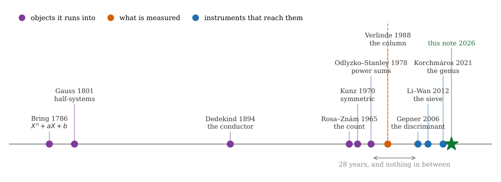
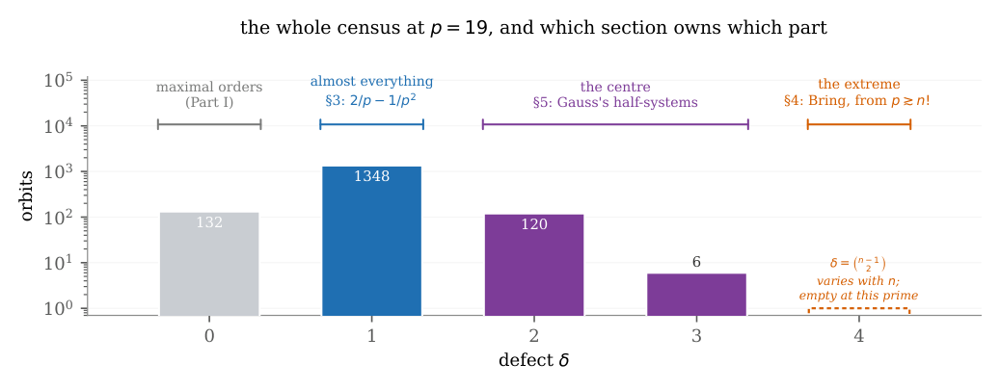
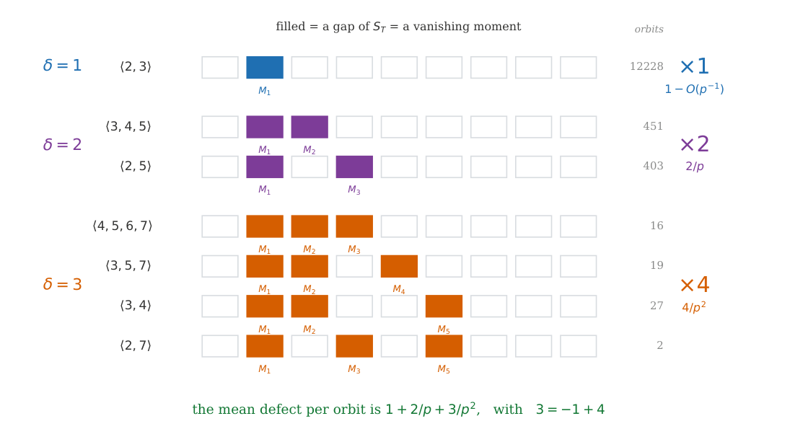
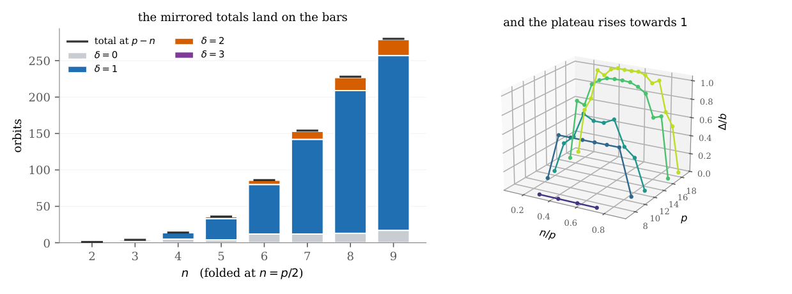
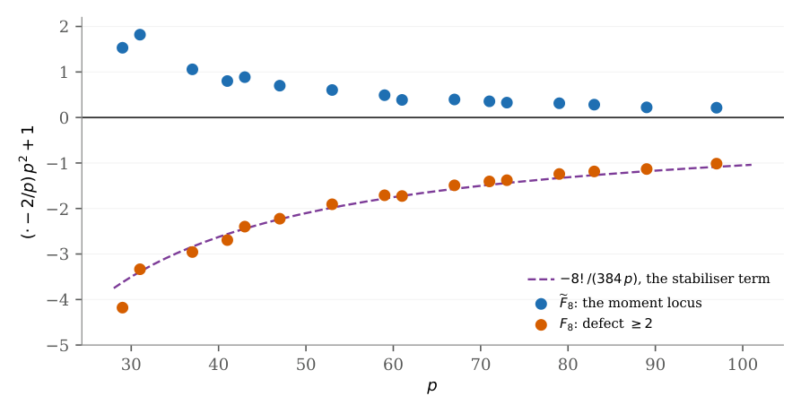
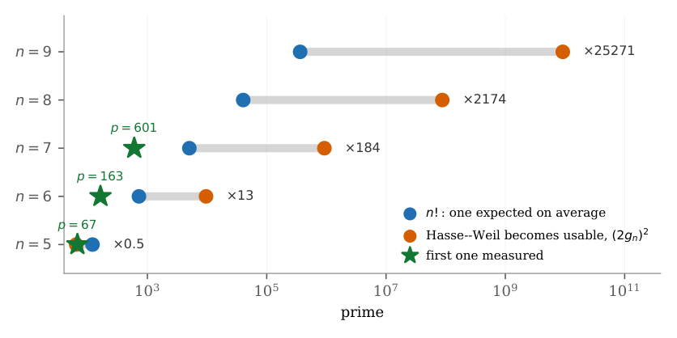

The order generated by a column of the SU(n)ₖ S-matrix is locally a numerical semigroup ring (Part II)
At a glance
What the paper contributes
Part I turned one column of the SU(n)k S-matrix into an order whose defect δ(T) is the number of gaps of a numerical semigroup ST. This note asks how the columns fit together: the p-adic valuation of the discriminant of the fusion ring splits into ramification, defects and a gluing term whose only unknown piece is Δ(n,p) = Σ δ over orbits. That splitting is verified computationally, not proved, as the paper says.
- Small defects by vanishing moments (Proposition 1, Corollary 3, Lemma 4): with trivial stabiliser, δ ≥ 2 ⇔ M2M3 = 0, and δ = 3 happens in exactly four ways, one per numerical semigroup of genus three; δ = 2 never occurs at n = 4. Observation 2 refines this and is measured.
- The distribution law (Theorem 5, Lemma 6, Theorem 8): for fixed n ≥ 5 the proportion of columns with δ ≥ 2 is 2/p − 1/p² up to an explicit error, with no factorial threshold; the mean defect per orbit is 1 + 2/p + 3/p² for n ≥ 7.
- Uniformity in the central range (Theorem 9, proof sketched): both expansions hold for εp ≤ n ≤ (1−ε)p.
- The two ends (Propositions 10–11, §4): totally split trinomials Xn + aX + b at the top (counted at n = 5 by an elliptic curve of conductor 50, measured); Gauss's half-systems in the middle, whose even moments vanish exactly and which give an infinite family of non-Gorenstein orders with semigroup ⟨3,5,7⟩.
🚀 Start here: Corollary 3: with trivial stabiliser, δ ≥ 2 if and only if M₂M₃ = 0.
Main results:
- Lemma 4: δ = 3 in exactly four ways, one per numerical semigroup of genus three
- Theorem 5: the proportion of columns with δ ≥ 2 is 2/p − 1/p² + Oₙ(p^(1−n/2) + p^(1+⌊n/2⌋−n))
- Theorem 8: the mean defect per orbit is 1 + 2/p + 3/p² + Oₙ(p^(−βₙ)) for n ≥ 7
- Proposition 11: for every p ≡ ±1 (mod 8), an explicit half-system gives a non-Gorenstein order with semigroup ⟨3,5,7⟩
🗺️ Map of the results (click a box to go to it)
Dependencies in the written proof: an arrow A → B means that this proof of B uses A. Every result rests on its written proof; the tags record what was checked besides, and each statement's “Evidence & scope” block says how far. The colour of a box is its strongest tag, in the order above; the tags in the box give the rest. Boxes with a thick border are the main results; click a box to read the statement.
📐 Setting (copied from the paper, §1–§3)
(§1) Let \(A_j\) be the order generated by the \(j\)-th Galois orbit of columns, in the étale algebra \(K_j\), and \({\mathcal{O}}_j\) its normalisation. The fusion ring sits in a chain \(R\subseteq \prod _j A_j\subseteq \prod _j{\mathcal{O}}_j\). The last index is the gluing, \(G(n,p):=v_p[\prod _jA_j:R]\). Writing \(\mathcal O\) for an orbit of centred spectra under \({\mathbb {F}}_p^\times \) and \(h_{\mathcal O}\) for its stabiliser order,
(§2) Part I reads the semigroup off the spectrum: with \(h\) the order of the multiplicative stabiliser of \(T\) and \(e=(p-1)/h\) the ramification index, \(S_T\) is generated by \(e\) together with those \(j{\lt}e\) for which \(M_{hj}(T)\ne 0\). The defect \(\delta (T)=\# ({\mathbb {N}}_0\setminus S_T)\) is therefore a function of one thing only: which power sums of \(T\) vanish. (§3) For \(J\subseteq \{ 1,2,3\} \) with \(1\in J\) write \(C_J(n,p)\) for the number of centred \(T\) with \(M_j(T)=0\) for every \(j\in J\). (§5) A subset of \({\mathbb {F}}_p^\times \) containing exactly one of each pair \(\{ a,-a\} \) is a half-system.
2 Where the defect comes from
At \(n=4\) and \(h=1\) the value \(\delta =2\) does not occur.
↳ Not used by another result of the paper.
First, \(h=1\) forces \(e_3\ne 0\): if \(e_3=0\) then the centred quartic \(X^4+e_2X^2-e_3X+e_4\) is even, so its root set is stable under \(t\mapsto -t\) and \(h\ge 2\). Hence \(M_3=3e_3\ne 0\) and \(3\in S_T\). Now if \(M_2\ne 0\) then \(2\in S_T\) too, so \(S_T\supseteq \langle 2,3\rangle \), whose only gap is \(1\), and \(\delta =1\). If \(M_2=0\) then \(e_2=0\), and by the cascade \(M_5=0\) as well; hence \(1,2,5\notin S_T\) and \(\delta \ge 3\). No spectrum is left for \(\delta =2\).
🖼️ Figure 1

Everything this note runs into, on one axis, and the dashed line is the object it measures. To the left of it, in purple, the objects: Bring’s trinomial, Gauss’s half-system, Dedekind’s conductor, Rosa and Znám’s count, Kunz’s criterion, Odlyzko and Stanley’s enumeration of power sums. To the right, in blue, the instruments that reach them: Gepner’s discriminant, the Li–Wan sieve, the generalised Bring curve. The split is clean — the last object is from 1978 and the first instrument from 2006, with nothing in between — and it is the point: nothing here was invented for the purpose.
🖼️ Figure 2

The map, drawn on the object rather than tabulated. Every orbit at \(p=19\), placed by its defect: \(\delta =0\) are the maximal orders settled in Part I (\(132\) orbits); \(\delta =1\) is almost everything (\(1348\)) and is governed by the law of §??; the rare \(\delta \ge 2\) (\(120\) and \(6\)) cluster at the centre, and the half-systems of §?? live in the second of those two columns. The last column is drawn detached and dashed on purpose: the maximal stratum of §?? sits at \(\delta =\binom {n-1}{2}\), which is not a single value once \(n\) varies; the comparison with Bring is about \(n\ge 5\), where at this prime that stratum is empty, and not about \(n=3\), where the maximum is \(\delta =1\) and is reached. §?? is what assigns an orbit to a column of this picture at all.
🛡️ Evidence & scope
Program: Newton recurrence, the cascade M₂ = 0 ⇒ M₅ = 0 at n = 4, and zero orbits with n = 4, δ = 2, over 7935 orbits, p ≤ 31, 3 ≤ n ≤ 7. cascada_newton.py
Let \(h=1\). Outside the four loci on which \((M_2,M_3)\), \((M_2,M_4)\), \((M_2,M_5)\) or \((M_3,M_5)\) vanish simultaneously, we find
This is measured, not proved, and everything below that rests on it inherits that status.
🆕 Classical and new: the paper labels it measured, not proved, and says nothing below depends on it.
↳ Not used by another result of the paper.
🛡️ Evidence & scope
Program: 438 orbits with h = 1 outside the loci, p ≤ 19, 3 ≤ n ≤ 7, no exception. tricotomia.py
For \(h=1\), \(\; \delta \ge 2\iff M_2M_3=0\).
Lean · ours, in partshow
added to the Lean repository after publication (21-oct-2026): δ ≥ 2 ↔ M₂M₃ = 0 from the generating rule (moments abstracted to a predicate), and g_i ≤ 2i − 1
✅ Checked when this page was built: GapBound.lean compiles with Lean 4.35.0, no errors, no sorry. Axioms — two_le_genus_iff, gap_le_two_mul_index_sub_one, gap_le_two_mul_genus_sub_one: propext, Classical.choice, Quot.sound.
Reproduce: Lean 4.35.0, Mathlib f0b4c8150aa0; in that Lean project, lake env lean GapBound.lean (SHA-256 of the compiled file: f7f979544891ccc9…; a source page on this site may show it with comments edited, under its own hash).
↳ Used in: Theorem 5
The corollary does not need the Observation; it follows from the generating rule alone. Since \(T\) is centred, \(M_1=0\), so \(1\notin S_T\). If \(M_2M_3\ne 0\) then \(2,3\in S_T\), hence \(S_T\supseteq \langle 2,3\rangle \), whose only gap is \(1\), and \(\delta =1\). If \(M_2=0\) then \(2\notin S_T\): it is not a generator, and it cannot be a sum of smaller positive elements because the only candidate is \(1\), which is absent. So \(2\) is a second gap and \(\delta \ge 2\). If \(M_3=0\) the same argument applies to \(3\), whose only decomposition by smaller indices would use \(1\).
Let \(T\) be centred with \(h=1\) and \(p{\gt}7\). Then \(\delta (T)=3\) if and only if one of
🆕 Classical and new: that there are exactly four semigroups of genus three is classical [RG09]; the paper claims the vanishing-moment half of each row.
↳ Used in: Theorem 8
That there are exactly four numerical semigroups of genus three, and that they are the ones listed, is classical and not ours; the count by genus is catalogued [ 6 ] . For completeness: the multiplicity is at most four; if it is four the gaps are \(1,2,3\); if three, the gaps include \(1,2\) and one more, which must be \(4\) or \(5\) because \(\langle 3,4,5\rangle \) contains every integer \(\ge 3\); if two, the gaps are the odd numbers below the smallest odd element, which must then be \(7\). What is ours is the second half of each row. The stated conditions are the generating rule read off each case: a minimal generator below \(e\) comes from a non-vanishing moment and a gap below \(e\) from a vanishing one, and the generators listed already produce every remaining index, so no further moment is constrained.
🖼️ Figure 3

The small defects, and where the coefficients come from. One row per numerical semigroup of genus \(\delta \); a filled cell is a gap of \(S_T\), and the same filled cell is the index of a moment that vanishes — the comb is read twice, which is what Lemma 4 says. The cell at \(1\) is filled in every row because \(T\) is centred, so every row starts from the same condition and only the rest distinguishes them. The number of rows in a band is the coefficient of the corresponding term: one semigroup of genus one, two of genus two, four of genus three, giving \(2/p\) and \(4/p^{2}\) and hence \(3=-1+4\) in Theorem 8. The counts on the right are orbits with \(h=1\) measured over \(p\le 29\); all four genus-three rows occur, the rarest twice.
🛡️ Evidence & scope
Program: the four rows in both directions over every centred orbit with h = 1: p ≤ 19 all n, p = 23 with 4 ≤ n ≤ 9, p = 29 with 5 ≤ n ≤ 8; no fifth gap set. familias_delta3.py
Program: the ladder of small defects (Figure 3). escalera_defectos.py
3 Almost every column has defect one
For every fixed \(n\ge 5\),
and in particular \(F_n(p)=2/p+O_n\! \left(p^{-\min (2,\, n/2-1)}\right)\).
🆕 Classical and new: the sieve over partitions is that of Li and Wan [LW], as in Lai, Marino, Robinson and Wan [LMRW20]; only the estimate is used, never an exact count [GMPP23].
↳ Used in: Theorem 8, Theorem 9
🖼️ Figure 4

Left: the census at \(p=19\) folded at \(n=p/2\). The bars are the orbit counts by defect for \(n\le p/2\); the dashes are the totals at the mirrored index \(p-n\), plotted on top. They land on the bars — all eight pairs, exactly. What the dashes display is the equality of the totals; the stronger statement, that the whole distribution by defect agrees term by term, is the measurement recorded below the figure and is not something the dashes alone can show. Right: the mean defect \(\Delta /b\) against \(n/p\), which is a third quantity again — neither \(F_n\), the proportion of spectra with \(\delta \ge 2\), nor the unweighted proportion of orbits — one ridge per prime, with nothing interpolated between them: each ridge is symmetric, and the plateau rises towards \(1\) as \(p\) grows. The plateau sits at \(n\asymp p/2\), which is outside the reach of Theorem 5; what governs it is Theorem 9, visible here before it is proved. Both from the archived output of nivel_rango.py.
🛡️ Evidence & scope
Program: the four steps of the proof, each against the census (Step 3 exact for 5 ≤ n ≤ 8, p ≤ 43). ley_2p.py
Numerical illustration (not a proof): the three-moment census at n = 8 up to p = 97: the coefficient −1 is not yet visible, as the paper says. ley_2p_largo.py, ley_2p_estabilizadores.py
Let \(n{\lt}p\), let \(J\) be a set of positive integers with \(1\in J\) and \(d=\max J{\lt}p\), and let \(C_J(n,p)\) be the number of \(n\)-subsets of \({\mathbb {F}}_p\) with \(M_j=0\) for every \(j\in J\). Then
↳ Used in: Theorem 5, Theorem 8, Theorem 9
Expand the \(|J|\) conditions by additive characters. A frequency \((a_j)_{j\in J}\) contributes the sum of \(e_p\bigl(\sum _{t\in T}f(t)\bigr)\) over \(n\)-subsets \(T\), with phase polynomial \(f(X)=\sum _{j\in J}a_jX^j\). The zero frequency gives \(\binom pn/p^{|J|}\) exactly. On a non-zero frequency \(f\) is non-constant of degree at most \(d\), so each character sum over \({\mathbb {F}}_p\) is at most \((d-1)\sqrt p\) by Weil. Expanding the \(n\)-subsets by cycle type contributes one such factor per cycle, and the identity \(\sum _{\sigma \in S_n}x^{c(\sigma )}=x(x+1)\cdots (x+n-1)\) sums those contributions over \(S_n\); dividing by \(n!\) and summing the \(p^{|J|}-1\) non-zero frequencies gives the stated bound.
🛡️ Evidence & scope
Program: the bound holds in all 48 cases of the three-moment census, n = 8, 29 ≤ p ≤ 97 (ratio bound/error 57 to 2.4·10⁵). cota_CJ.py
For every fixed \(n\ge 7\), with \(\beta _n=\min (3,n/2-1)\),
and in the uniform measure on centred spectra \(\mathbb P(\delta =3)=4/p^{2}+O_n(p^{-\beta _n})\).
↳ Used in: Theorem 9
The inclusion–exclusion is over the four loci \(L_{ab}=\{ M_a=M_b=0\} \) with \(ab\in \{ 23,24,25,35\} \), not over the four rows of Lemma 4: the rows carry non-vanishing conditions as well and describe four different semigroups, so as events they are disjoint and there is nothing to include or exclude. It is the loci that overlap, and by the consequence recorded after that lemma their union is exactly \(\{ h=1,\ \delta \ge 3\} \). Note that lying in \(L_{ab}\) is weaker than realising the corresponding semigroup: further moments may vanish and the defect may be larger.
Each locus imposes two vanishing conditions beyond \(M_1=0\), so each has probability \(p^{-2}+O_n(p^{1-n/2})\) by Lemma 6 with \(d\le 5\). Any two of them together impose at least three — the six pairwise unions are \(\{ 2,3,4\} \), \(\{ 2,4,5\} \), \(\{ 2,3,4,5\} \) and \(\{ 2,3,5\} \) three times — so each intersection is \(O_n(p^{-3}+p^{1-n/2})\), where the second term must be kept: at \(n=7\) it is \(p^{-5/2}\), which is larger than \(p^{-3}\). Inclusion–exclusion gives \(\mathbb P(\delta \ge 3)=4p^{-2}+O_n(p^{-\beta _n})\), and (7) with \(r=4\) gives \(\mathbb P(\delta \ge 4)=O_n(p^{-3}+p^{1-n/2})\). Since \(T\) is centred, \(1\notin S_T\) whenever \(h=1\), so \(\delta =0\) forces \(h{\gt}1\) and \(\mathbb P(\delta =0)=O_n(p^{-3})\) for \(n\ge 7\). Now
the last sum being at most \(\binom {n-1}{2}\mathbb P(\delta \ge 4)\). Substituting Theorem 5 for the second term and the above for the third gives \(1+2/p+(-1+4)/p^{2}\), and the change of measure adds nothing at this order.
🖼️ Figure 5

The two quantities at \(n=8\) over the sixteen primes \(29\le p\le 97\) — one more than the table above, which starts at \(31\) — plotted as \((\cdot -2/p)p^2+1\), which should tend to zero if the coefficient \(-1\) is visible. Blue is the moment locus \(\widetilde F_8\), orange is \(F_8\) itself, and the dashed curve is not a fit but the stabiliser term \(-8!/(384\, p)\) computed from the classification of the spectra with \(h{\gt}1\). The two series approach zero from opposite sides, and neither is close to it at \(p=97\): the dashed curve says why, and it is of size one over the whole range. The earlier version of this figure drew the blue points alone and labelled them \(F_8\).
🛡️ Evidence & scope
Numerical illustration (not a proof): at p ≤ 19, n ≤ 8 the ratio Δ/b is still between 0.50 and 1.01: the computed range neither confirms nor contradicts the theorem, which rests on its proof. censo_delta.py
Fix \(0{\lt}\varepsilon {\lt}1/2\). There is \(c_\varepsilon {\gt}0\) such that, uniformly for \(\varepsilon p\le n\le (1-\varepsilon )p\),
🆕 Classical and new: the paper gives the proof as a sketch and says so.
↳ Not used by another result of the paper.
5 The centre: Gauss’s half-systems
Let \(T\subseteq {\mathbb {F}}_p^\times \) satisfy \(M_r(T)=0\) for every even \(r\) with \(2\le r\le p-3\). Then \(T\) is empty, a half-system, or all of \({\mathbb {F}}_p^\times \). Conversely every half-system has those moments zero. In particular a non-empty proper \(T\) with those moments zero has \(|T|=(p-1)/2\): the size is forced, not assumed.
🆕 Classical and new: the paper has not found the statement anywhere, under five vocabularies, and attributes it to nobody.
↳ Used in: Proposition 11
For a quadratic residue \(q\) put \(w(q)=\# \{ t\in T: t^2=q\} \in \{ 0,1,2\} \). For \(r=2k\) the hypothesis reads \(\sum _q w(q)q^k=0\) for \(1\le k{\lt}(p-1)/2\). The full Vandermonde matrix on the distinct values \(q\), with rows \(k=0,\dots ,m-1\), is invertible, so the rows \(k=1,\dots ,m-1\) have a kernel of dimension exactly one; and the constant vector lies in it, because \(\sum _{q\in \mathrm{QR}}q^k=0\) for \(1\le k{\lt}m\). Hence all \(w(q)\) are equal, to \(0\), \(1\) or \(2\): \(T\) is empty, meets each pair \(\{ a,-a\} \) once, or is all of \({\mathbb {F}}_p^\times \). If \(0\in T\) the same argument applies to \(T\setminus \{ 0\} \), which adds the half-systems with \(0\) adjoined, of size \((p+1)/2\).
Conversely, if \(T\) is a half-system then squaring is injective on \(T\) and \(T^2\) runs over the quadratic residues exactly once, so for \(r=2k\) with \(1\le k{\lt}m\) one has \(M_{2k}(T)=\sum _{s\in \mathrm{QR}}s^{k}=0\).
🖼️ Figure 6

One bar per \(n\), on a logarithmic scale: the bar is the gap. Its left end is \(n!\), where the expected number of columns of maximal defect first reaches one; its right end is \((2g_n)^2\), the prime from which the Hasse–Weil bound carries any information; the ratio is printed beside it. The stars are measured first appearances — \(p=67\), \(163\) and \(601\) for \(n=5,6,7\) — and all three sit left of \(n!\), by a margin that widens with \(n\). That is the point of the figure: neither end of the bar predicts the star, but the right end misses it by a factor that grows quadratically while the left end misses it by a factor that stays small. At \(n=5\) the two ends are inverted, which is why the geometry works there and nowhere above.
🛡️ Evidence & scope
Program: no non-half-system with those moments over every orbit with p ≤ 19; the converse over 2924 half-systems. semisistemas.py
Let \(p{\gt}7\) be a prime with \((2\mid p)=1\) and let \(m=(p-1)/2\). There is exactly one \(k\in \{ 0,\dots ,m\} \) with \(8k(k+1)+1\equiv 0\pmod p\), and for it the set
is a centred half-system with trivial stabiliser and \(S_{T_k}=\langle 3,5,7\rangle \), hence \(\delta (T_k)=3\) and the order is not Gorenstein.
🆕 Classical and new: infinite explicit non-Gorenstein families are cheap (Marseglia [Mar22]); the paper claims only that this one is natural and its semigroup does not move with p.
↳ Not used by another result of the paper.
The congruence is \((2k+1)^2\equiv \tfrac 12\), which has two roots in \({\mathbb {F}}_p\) because \((2\mid p)=1\); they are \(k\) and \(p-1-k\), one on each side of \(m\), and neither equals \(m\), so exactly one lies in \(\{ 0,\dots ,m\} \). By construction \(T_k\) contains one of each pair \(\{ t,-t\} \), so it is a half-system and every even moment vanishes by Proposition 10. For the odd ones put \(u=k(k+1)\) and \(v=m(m+1)\), so that \(u\equiv -\tfrac 18\) and \(v\equiv -\tfrac 14\) in \({\mathbb {F}}_p\). Writing \(F_j(t)=\sum _{r\le t}r^j\), one has \(M_j(T_k)=2F_j(k)-F_j(m)\) for odd \(j\), and the classical closed forms \(F_3=\tfrac {[t(t+1)]^2}{4}\), \(F_5=\tfrac {[t(t+1)]^2(2t(t+1)-1)}{12}\) and \(F_7=\tfrac {[t(t+1)]^2(3[t(t+1)]^2-4t(t+1)+2)}{24}\) give, after substituting \(u\) and \(v\),
all non-zero for \(p{\gt}7\). The same two variables give the centring, which does not follow from the three moments above: \(F_1(t)=t(t+1)/2\), so
So \(T_k\) is centred, and \(M_3M_5M_7\ne 0\) forces \(h=1\); the displayed semigroup then follows from the previous paragraph.
🛡️ Evidence & scope
Program: the 19 admissible primes p ≤ 200: half-system, M₁ = 0, h = 1, the three constants, gaps 1,2,4. familia_Tk.py
References
- 1
E. S. Bring, Meletemata quaedam mathematica circa transformationem aequationum algebraicarum, Lund, 1786. 🔎 find it
- 2
C. F. Gauss, Disquisitiones Arithmeticae, Leipzig, 1801. 🔎 find it
- 3
R. Dedekind, Supplement XI, in P. G. L. Dirichlet, Vorlesungen über Zahlentheorie, 4th ed., Vieweg, Braunschweig, 1894. 🔎 find it
- 4
E. Verlinde, Fusion rules and modular transformations in 2D conformal field theory, Nucl. Phys. B 300 (1988), 360–376. 🔎 find it
- 5
A. M. Odlyzko and R. P. Stanley, Enumeration of power sums modulo a prime, J. Number Theory 10 (1978), 263–272. 🔎 find it
- 6
J. C. Rosales and P. A. García-Sánchez, Numerical Semigroups, Developments in Mathematics 20, Springer, 2009. 🔎 find it
- 7
D. Gepner, Galois groups in rational conformal field theory II. The discriminant, 2006, arXiv:hep-th/0608140.
- 8
E. Kunz, The value-semigroup of a one-dimensional Gorenstein ring, Proc. Amer. Math. Soc. 25 (1970), 748–751. 🔎 find it
- 9
A. Rosa and Š. Znám, On a combinatorial problem in the theory of congruences (in Russian), Mat.-Fyz. Časopis SAV 15 (1965), 49–59. 🔎 find it
- 10
N. J. A. Sloane (ed.), The On-Line Encyclopedia of Integer Sequences, sequence A262568, https://oeis.org/A262568.
- 11
C. Levaillant, Powers of two weighted sum of the first \(p\) divided Bernoulli numbers modulo \(p\), arXiv:2001.03471.
- 12
S. Marseglia, Cohen–Macaulay type of orders, generators and ideal classes, arXiv:2206.03758.
- 13
G. Korchmáros, S. Lia and M. Timpanella, A generalization of Bring’s curve in any characteristic, arXiv:2112.10886.
- 14
H. W. Braden and L. Disney-Hogg, Bring’s curve: old and new, Eur. J. Math. 10 (2024), art. 3; doi:10.1007/s40879-023-00706-0; arXiv:2208.13692.
- 15
J. Li and D. Wan, Counting subset sums of finite abelian groups, J. Combin. Theory Ser. A 119 (2012), 170–182. 🔎 find it
- 16
T. Lai, A. Marino, A. Robinson and D. Wan, Moment subset sums over finite fields, Finite Fields Appl. 62 (2020), 101607. 🔎 find it
- 17
N. Giménez, G. Matera, M. Pérez and M. Privitelli, Smooth symmetric systems over a finite field and applications, arXiv:2312.09477.
- 18
J. F. Gottig, M. Pérez and M. Privitelli, An approach to the moments subset sum problem through systems of diagonal equations over finite fields, arXiv:2401.06964.
- 19
C. Marín, The order generated by a column of the \({\mathrm{SU}}(n)_k\) \(S\)-matrix is locally a numerical semigroup ring. Part I: Gauss sums, power sums of the spectrum, and Gorenstein columns, 2026, https://doi.org/10.5281/zenodo.22848529.